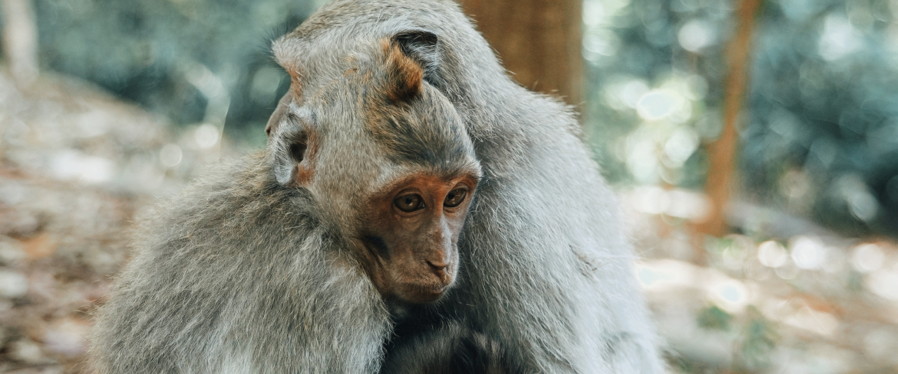

Обезьяны в Family Zoo
Обезьяна
Обезья́ны[1][2][3], или «сухоносые» приматы[3] (лат. Haplorhini), — подотряд млекопитающих из отряда приматов. Обезьяны отличаются по ряду признаков от другого подотряда приматов — полуобезьян. У гаплориновых приматов сухой нос и менее развитое чувство обоняния. Среди обезьян преобладают виды, рождающие одного детёныша. В целом, этот подотряд считается более развитым в эволюционном отношении. Обезьяны обитают в тропических и субтропических регионах Америки, Африки (за исключением Мадагаскара), в Гибралтаре, а также в Южной и Юго-Восточной Азии вплоть до Японии. Человек населяет все континенты за исключением Антарктиды (где не живёт постоянно, но постоянно присутствует). У большинства обезьян белки глаз обычно чёрные, как и зрачки (у людей — белые, что контрастирует со зрачками). Обезьяны отличаются от полуобезьян дневным образом жизни, сложным поведением, всеядностью с уклоном в растительноядность. С этим связаны их многие морфологические особенности, например, сложно устроенный мозг.